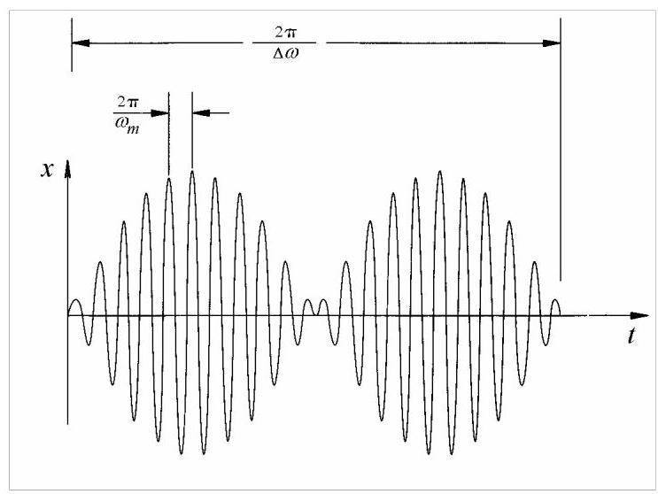
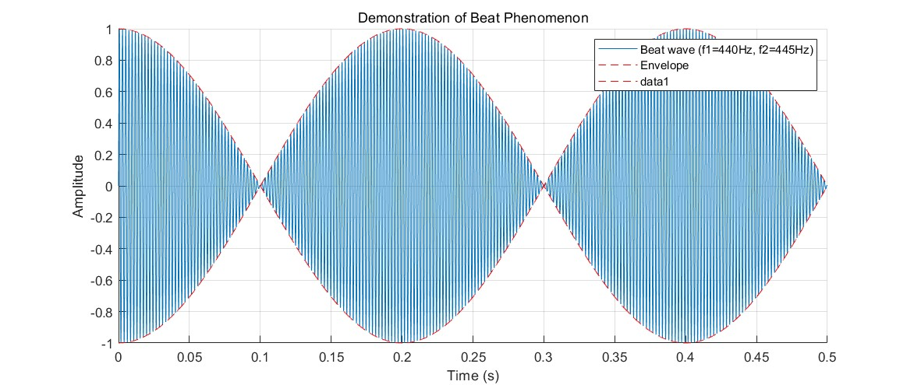

第4篇
2.2.3 拍
方程(2.28)中的余弦差可表示为乘积
\[
x\left( t\right) = \frac{2{X}_{st}}{1 - {\left( \omega /{\omega }_{n}\right) }^{2}}\sin {\omega }_{m}t\sin {\Delta \omega t}, \tag{2.29}
\]
其中
\[
{\omega }_{m} = \frac{{\omega }_{n} + \omega }{2}\;\text{ and }\;{\Delta \omega } = \frac{{\omega }_{n} - \omega }{2}.
\]
当\({\Delta \omega }\)非常小时，由于\({\omega }_{m}\)相对较大，方程(2.29)中的乘积表示一个振幅调制振荡。较高频率\({\omega }_{m}\)的简谐运动被较低频率\({\Delta \omega }\)的简谐运动进行振幅调制(图2.10)。这种快速振荡且振幅缓慢变化的运动称为拍。
该术语源自声学。例如，当钢琴上同一音高的两根弦略微失谐时，听者会听到声音强弱交替(拍)。当两根弦完全同音时，拍消失，此时只能听到单一频率。

图2.10
当飞机两台发动机转速略有差异时，可听到拍。在电站启动发电机时也会出现。在发电机并网前，其电频率与电网频率略有差异，于是发电机的嗡嗡声与其他发电机或变压器的嗡嗡声音高不同，从而可听到拍。
下面是一段MATLAB代码，用于演示拍现象。该代码生成两个频率相近的正弦波，然后将它们相加，绘制出结果波形，并播放合成的声音。你可以听到声音强度的周期性变化，这就是拍。（注意声音不要太大，有一定不适感）
% 设置参数
Fs = 44100; % 采样频率 (Hz)
T = 3.0; % 持续时间 (s)
t = 0:1/Fs:T-1/Fs; % 时间向量
f1 = 440; % 第一个波的频率 (Hz) - A4音
f2 = 445; % 第二个波的频率 (Hz), 与f1接近, 产生5Hz的拍频
% 生成两个正弦波
y1 = 0.5 * sin(2 * pi * f1 * t);
y2 = 0.5 * sin(2 * pi * f2 * t);
% 将两个波相加得到拍频波
y_beat = y1 + y2;
% 播放声音
disp('正在播放声音...');
sound(y_beat, Fs);
pause(T + 0.5); % 等待播放完成
disp('播放结束。');
% 绘制图形
figure;
hold on;
% 为了清晰显示，只绘制前一小段时间的波形
plot_duration = 0.5; % seconds
plot_samples = round(plot_duration * Fs);
plot(t(1:plot_samples), y_beat(1:plot_samples), 'DisplayName', sprintf('Beat wave (f1=%dHz, f2=%dHz)', f1, f2));
% 绘制包络线
envelope = 2 * 0.5 * cos(2 * pi * ((f2 - f1) / 2) * t);
plot(t(1:plot_samples), envelope(1:plot_samples), 'r--', 'DisplayName', 'Envelope');
plot(t(1:plot_samples), -envelope(1:plot_samples), 'r--');
hold off;
title('Demonstration of Beat Phenomenon');
xlabel('Time (s)');
ylabel('Amplitude');
legend;
grid on;
